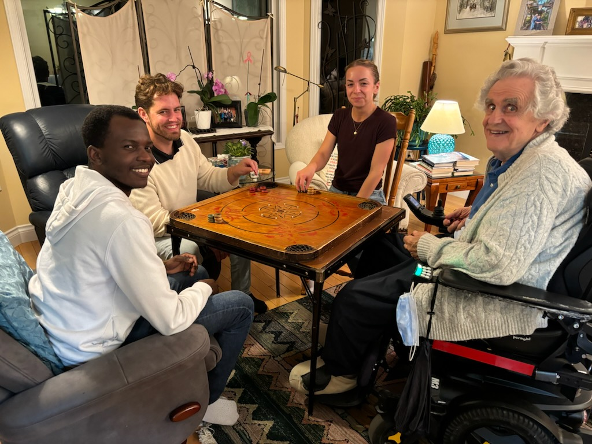

Nanaimo, known as the "Harbor City," is a coastal gem on Vancouver Island, British Columbia. While I haven’t had the chance to explore it deeply yet, one thing that stands out about this charming city is its welcoming atmosphere and the incredible people I’ve met here.
Visiting Colliery Dam was a peaceful and refreshing experience. The forested trails were perfect for a relaxing walk, and the sound of the flowing water added to the calm atmosphere. I enjoyed spotting ducks by the water and taking in the natural beauty all around. It’s a great spot to unwind and connect with nature.
Altough I haven't been here for a full year, this place already feels like a home away from home. I can’t wait to explore more of Nanaimo, from its parks, to local markets and the vibrant arts community.But for now, I’ll always remember the kindness of the people who’ve made my time here so memorable.
